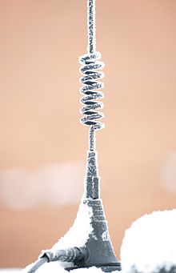

A loading coil or load coil is an inductor that is inserted into an electronic circuit to increase its inductance. The term originated in the 19th century for inductors used to prevent signal distortion in long-distance telegraph transmission cables. The term is also used for inductors in radio antennas, or between the antenna and its feedline, to make an electrically short antenna resonant at its operating frequency. The concept of loading coils was discovered by Oliver Heaviside in studying the problem of slow signalling speed of the first transatlantic telegraph cable in the 1860s. He concluded additional inductance was required to prevent amplitude and time delay distortion of the transmitted signal. The mathematical condition for distortion-free transmission is known as the Heaviside condition. Previous telegraph lines were overland or shorter and hence had less delay, and the need for extra inductance was not as great. Submarine communications cables are particularly subject to the problem, but early 20th century installations using balanced pairs were often continuously loaded with iron wire or tape rather than discretely with loading coils, which avoided the sealing problem. Loading coils are historically also known as Pupin coils after Mihajlo Pupin, especially when used for the Heaviside condition and the process of inserting them is sometimes called pupinization.
A common application of loading coils is to improve the voice-frequency amplitude response characteristics of the twisted balanced pairs in a telephone cable. Because twisted pair is a balanced format, half the loading coil must be inserted in each leg of the pair to maintain the balance. It is common for both these windings to be formed on the same core. This increases the flux linkages, without which the number of turns on the coil would need to be increased. Despite the use of common cores, such loading coils do not comprise transformers, as they do not provide coupling to other circuits. Loading coils inserted periodically in series with a pair of wires reduce the attenuation at the higher voice frequencies up to the cutoff frequency of the low-pass filter formed by the inductance of the coils (plus the distributed inductance of the wires) and the distributed capacitance between the wires. Above the cutoff frequency, attenuation increases rapidly. The shorter the distance between the coils, the higher the cut-off frequency. The cutoff effect is an artifact of using lumped inductors. With loading methods using continuous distributed inductance there is no cutoff. Without loading coils, the line response is dominated by the resistance and capacitance of the line with the attenuation gently increasing with frequency. With loading coils of exactly the right inductance, neither capacitance nor inductance dominate: the response is flat, waveforms are undistorted and the characteristic impedance is resistive up to the cutoff frequency. The coincidental formation of an audio frequency filter is also beneficial in that noise is reduced.
With loading coils, signal attenuation of a circuit remains low for signals within the passband of the transmission line but increases rapidly for frequencies above the audio cutoff frequency. If the telephone line is subsequently reused to support applications that require higher frequencies, such as in analog or digital carrier systems or digital subscriber line (DSL), loading coils must be removed or replaced. Using coils with parallel capacitors forms a filter with the topology of an m-derived filter and a band of frequencies above the cut-off is also passed. Without removal, for subscribers at an extended distance, e.g., over 4 miles (6.4 km) from the central office, DSL cannot be supported.
American early and middle 20th century telephone cables had load coils at intervals of a mile (1.61 km), usually in coil cases holding many. The coils had to be removed to pass higher frequencies, but the coil cases provided convenient places for repeaters of digital T-carrier systems, which could then transmit a 1.5 Mbit/s signal that distance. Due to narrower streets and higher cost of copper, European cables had thinner wires and used closer spacing. Intervals of a kilometer allowed European systems to carry 2 Mbit/s.
Another type of loading coil is used in radio antennas. Monopole and dipole radio antennas are designed to act as resonators for radio waves; the power from the transmitter, applied to the antenna through the antenna's transmission line, excites standing waves of voltage and current in the antenna element. To be “naturally” resonant, the antenna must have a physical length of one quarter of the wavelength of the radio waves used (or a multiple of that length, with odd multiples usually preferred). At resonance the antenna acts electrically as a pure resistance, absorbing all the power applied to it from the transmitter. In many cases for practical reasons it is necessary to make the antenna shorter than the resonant length, this is called an electrically short antenna. An antenna shorter than a quarter wavelength presents capacitive reactance to the transmission line. Some of the applied power is reflected back into the transmission line and travels back toward the transmitter. The two currents at the same frequency running in opposite directions causes standing waves on the transmission line, measured as a standing wave ratio (SWR) greater than one. The elevated currents waste energy by heating the wire, and can even overheat the transmitter. To make an electrically short antenna resonant, a loading coil is inserted in series with the antenna. The coil is built to have an inductive reactance equal and opposite to the capacitive reactance of the short antenna, so the combination of reactances cancels. When so loaded the antenna presents a pure resistance to the transmission line, preventing energy from being reflected. The loading coil is often placed at the base of the antenna, between it and the transmission line (base loading), but for more efficient radiation, it is sometimes inserted in the center of the antenna element itself (center loading). Loading coils for powerful transmitters can have challenging design requirements, especially at low frequencies. The radiation resistance of short antennas can be very low, as low a few ohms in the LF or VLF bands, where antennas are commonly short and inductive loading is most needed. Because resistance in the coil winding is comparable to, or exceeds the radiation resistance, loading coils for extremely electrically short antennas must have extremely low AC resistance at the operating frequency. To reduce skin effect losses the coil is often made of tubing or Litz wire, with single layer windings, with turns spaced apart to reduce proximity effect resistance. They must often handle high voltages. To reduce power lost in dielectric losses, the coil is often suspended in air supported on thin ceramic strips. The capacitively loaded antennas used at low frequencies have extremely narrow bandwidths, and therefore if the frequency is changed the loading coil must be adjustable to tune the antenna to resonance with the new transmitter frequency. Variometers are often used.
To reduce losses due to high capacitance on long-distance bulk power transmission lines, inductance can be introduced to the circuit with a flexible AC transmission system (FACTS), a static VAR compensator, or a static synchronous series compensator. Series compensation can be thought of as an inductor connected to the circuit in series if it is supplying inductance to the circuit.